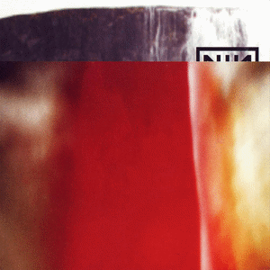

NOTE: This site is non-indexed, so you can only view this site if you've been given the URL.
Album of The Month
Like the "Track Of The Week" page, but instead I will choose a fully-fledged Album, Soundtrack or EP at the start of every month. On my old site, I used to do "Album of the Week" but that got tiring quickly and I drained myself listening to an entire album every week, so I decided to redo the same concept but make it monthly instead of weekly.
October 2026
"The Fragile" By Nine Inch Nails

Release Date: 1999
Genre: Industrial Rock & Alternative Rock
archliver - 2026